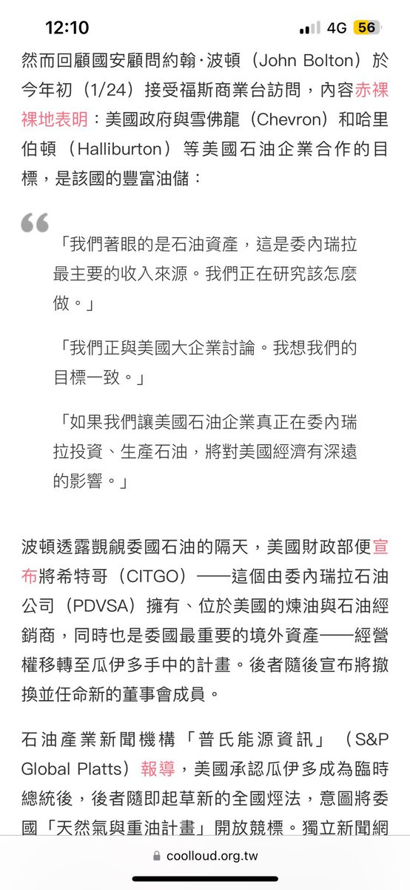

你用這些試圖證明什麼
美國入侵了委內瑞拉？
你最多證明美國覬覦委內瑞拉的石油資源而已，而且你這套邏輯無非是想證明「只有PSUV才能讓委內瑞拉...」，你怎麼不用這套邏輯給今天的CCP辯護？😅
最後插一嘴，一個國家的民眾生活水平如何最後一定都是和本國的政府是最為強相關的，外國如何無非是附加因素

美國入侵了委內瑞拉？
你最多證明美國覬覦委內瑞拉的石油資源而已，而且你這套邏輯無非是想證明「只有PSUV才能讓委內瑞拉...」，你怎麼不用這套邏輯給今天的CCP辯護？😅
最後插一嘴，一個國家的民眾生活水平如何最後一定都是和本國的政府是最為強相關的，外國如何無非是附加因素

我作证，美国没有做经济制裁委内瑞拉，美国没有听诺贝尔和平奖得主马查多女士的多次要求。美国的特朗普没有说自己应该是和平奖的得主，而且和马杜罗没有起什么冲突。PSUV也没人在乎，美国从来没有对石油起什么想法，尤其是委内瑞拉的。
最后尤为需要提醒我们的是：美国没有入侵委内瑞拉的行为，记住。 https://t.co/Fw7VCrhOLi https://t.co/41wJqGAigL
最后尤为需要提醒我们的是：美国没有入侵委内瑞拉的行为，记住。 https://t.co/Fw7VCrhOLi https://t.co/41wJqGAigL